MANTENIMIENTO Y REPARACIÓN
servicio con vehículo en marcha
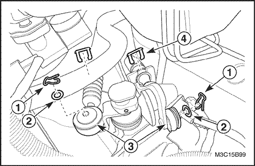


Caja de cambios manual
Herramientas necesarias
Soporte del motor EN-48356
Procedimiento de desmontaje
- Desmonte la batería y la bandeja portabatería. Consulte la Sección 1E, Sistema eléctrico del motor.
- Desconecte el cable del selector y del cambio de marchas.
- Retire los pasadores del cable(1).
- Quite las arandelas(2).
- Desconecte el cable del selector y del cambio de marchas(3).
- Quite los anillos en forma de E del cable(4).
- Desconecte los cables de su soporte.
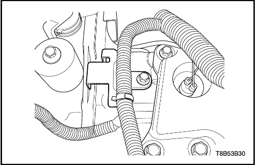
- Extraiga el cableado del motor del soporte.
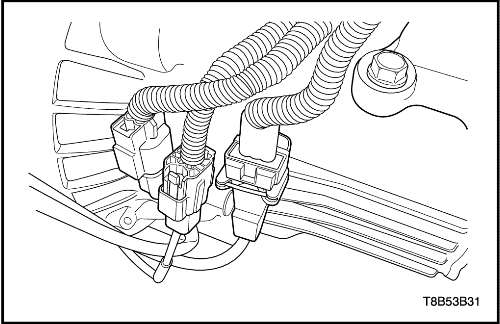
- Extraiga el conector del sensor de posición del cigüeñal y los conectores del sensor de oxígeno del soporte.
- Desenchufe el conector del sensor de posición del cigüeñal y los conectores del sensor de oxígeno.
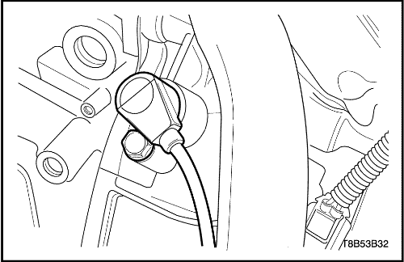
- Quite el tornillo del sensor de posición del cigüeñal.
- Desmonte el sensor de posición del cigüeñal.
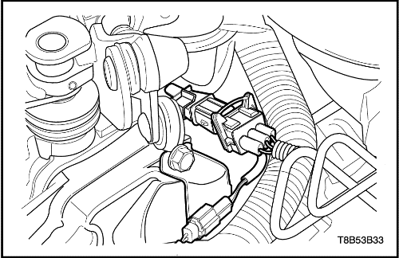
- Extraiga el conector del sensor de detonación del soporte.
- Desenchufe el conector del sensor de detonación.
- Desenchufe el conector del interruptor de la luz de marcha atrás.
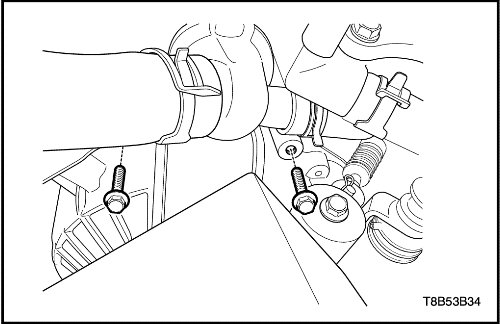
- Quite los tornillos superiores de la caja de cambios.
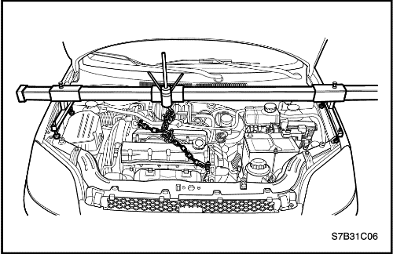
- Monte el soporte del motor EN-48356.
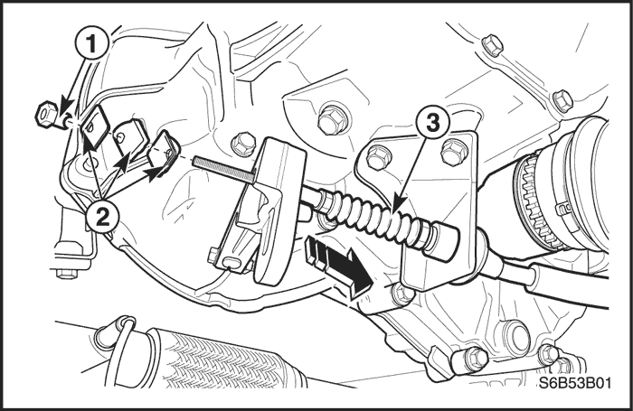
- Desconecte el cable del embrague.
- Quite la tuerca de ajuste del cable(1).
- Retire la placa delantera de desembrague, la arandela y la placa trasera de desembrague (2).
- Desconecte el cable del taladro de fijación de la caja de cambios(3).
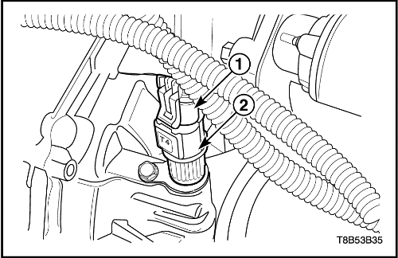
- Desenchufe el conector del sensor de velocidad del vehículo(1).
- Desmonte el sensor de velocidad del vehículo (2).
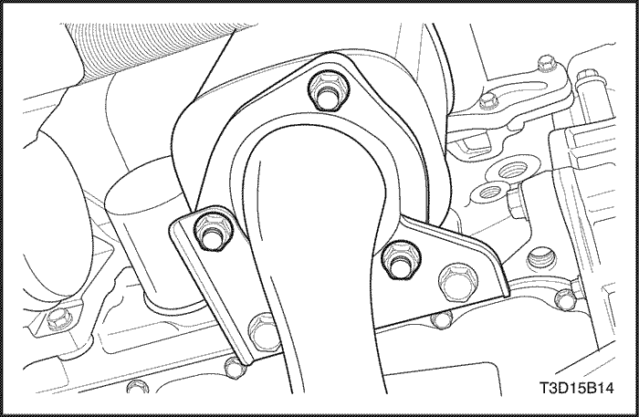
- Desmonte el tubo de escape delantero. Consulte la Sección 1G, Sistema de escape del motor.
- Desmonte el convertidor catalítico. Consulte la Sección 1G, Sistema de escape del motor.
- Desmonte el árbol de transmisión. Consulte la Sección 3B, Árbol de transmisión de la caja de cambios manual.
- Desmonte el motor de arranque. Consulte la Sección 1E, Sistema eléctrico del motor.
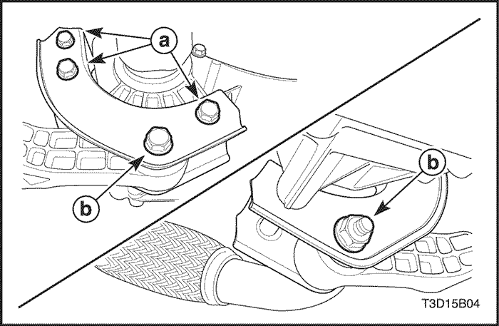
- Quite el tornillo y la tuerca de la unión del bloque amortiguador (b).
- Quite los tres tornillos del soporte de fijación trasero (a).
- Desmonte el soporte de fijación trasero de la caja de cambios.
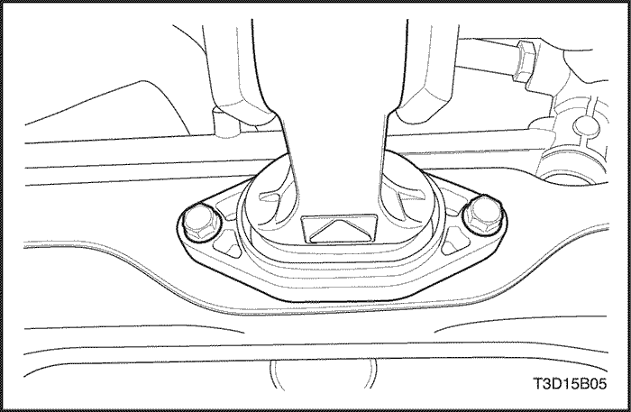
- Quite los tornillos de retención del bloque amortiguador trasero.
- Desmonte el bloque amortiguador trasero.
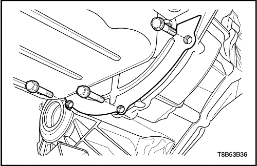
- Quite los tornillos del plato inferior del cárter del embrague.
- Desmonte el plato inferior del cárter del embrague.
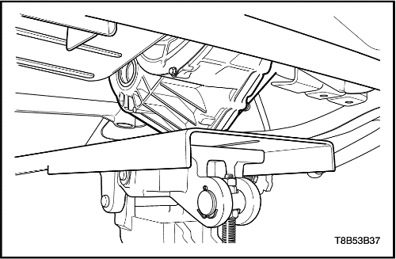
- Soporte el conjunto de la caja de cambios utilizando el gato de apoyo.
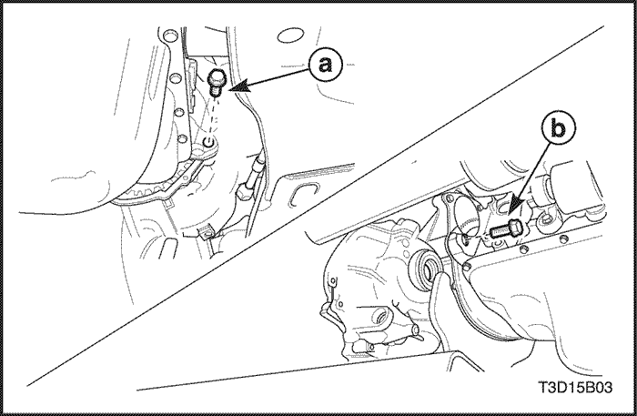
- Quite los tornillos inferiores de la caja de cambios.
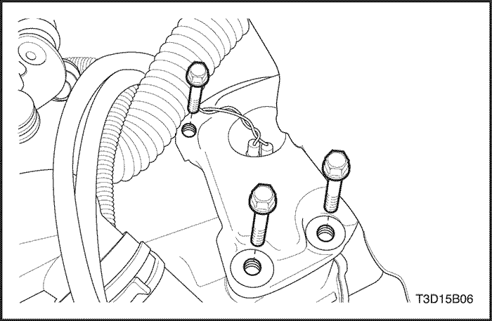
- Quite los tornillos del soporte de fijación izquierdo de la caja de cambios.
- Desmonte el conjunto de la caja de cambios con cuidado.
procedimiento de montaje
- Instale la caja de cambios en el vehículo y apoye el conjunto de la caja de cambios utilizando el gato de apoyo.
- Coloque los tornillos del soporte de fijación izquierdos de la caja de cambios.
Apretar
Apriete los tornillos del soporte de fijación izquierdo de la caja de cambios hasta 55-65 N•m (41-48 lb-pie).
- Coloque los tornillos inferiores de la caja de cambios.
Apretar
Apriete los tornillos hasta 55-65 N•m (41-48 lb-pie).
- Coloque los tornillos de la placa inferior de la carcasa del embrague y monte la placa inferior de la carcasa del embrague.
Apretar
Apriete los tornillos del de la placa inferior de la carcasa del embrague hasta 4-7 N•m (35-62 lb-pulg.).
- Monte el bloque amortiguador trasero y coloque los tornillos de retención del bloque amortiguador trasero.
Apretar
Apriete los tornillos de retención del bloque amortiguador trasero hasta 50-60 N•m (37-44 lb-pie).
- Monte el soporte trasero y coloque los tornillos del soporte trasero.
Apretar
- Apriete los tornillos (a) del soporte de fijación trasero hasta 55-65 N•m (41-48 lb-pie).
- Apriete el tornillo y la tuerca (b) de conexión del bloque amortiguador hasta 75-95 N•m (55-70 lb-pie).
- Monte el motor de arranque. Consulte la Sección 1E, Sistema eléctrico del motor.
- Monte el árbol de transmisión. Consulte la Sección 3B, Árbol de transmisión de la caja de cambios manual.
- Monte el convertidor catalítico. Consulte la Sección 1G, Sistema de escape del motor.
- Monte el tubo de escape delantero. Consulte la Sección 1G, Sistema de escape del motor.
- Monte el sensor de velocidad del vehículo(2).
- Enchufe el conector del sensor de velocidad del vehículo(1).
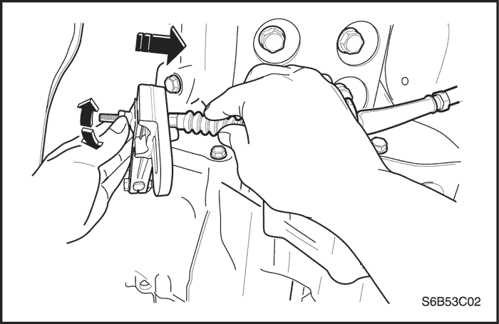
- Conecte el cable del embrague.
- Conecte el cable al taladro de la fijación de la caja de cambios.
- Monte la placa trasera de desembrague, la arandela y la placa delantera de desembrague.
- Coloque la tuerca de ajuste del cable.
- Desmonte el soporte del motor EN-48356.
- Coloque los tornillos superiores de la caja de cambios.
Apretar
Apriete los tornillos hasta 55-65 N•m (41-48 lb-pie).
- Enchufe el conector del interruptor de la luz de marcha atrás.
- Enchufe el conector del sensor de detonación.
- Coloque el conector del sensor de detonación en el soporte.
- Monte el sensor de posición del cigüeñal y coloque el tornillo del sensor de posición del cigüeñal.
Apretar
Apriete el tornillo del sensor de posición del cigüeñal hasta 5-8 N•m (44-71 lb-pulg.).
- Enchufe el conector del sensor de posición del cigüeñal y los conectores del sensor de oxígeno.
- Coloque el conector del sensor de posición del cigüeñal y los conectores del sensor de oxígeno en el soporte.
- Conecte el cableado del motor en el soporte.
- Conecte el cable del selector y del cambio.
- Conecte el cable a su soporte.
- Coloque los anillos en forma de E del cable(4).
- Conecte el cable del selector y del cambio(3).
- Coloque las arandelas(2).
- Coloque los pasadores del cable(1).
- Monte la batería y la bandeja portabatería. Consulte la Sección 1E, Sistema eléctrico del motor.
- Ajuste el cable del embrague. Consulte la sección 5C2, Embrague.
- Compruebe el nivel de aceite. Consulte el apartado "Comprobación del nivel de aceite" de esta sección.
Engranaje arrastrado del velocímetro
(Indicado para conducción a izquierdas, conducción a derechas similar)
Procedimiento de desmontaje
- Desenchufe el conector del sensor de velocidad del vehículo.
- Quite el tornillo y desmonte el conjunto del engranaje conducido del velocímetro.
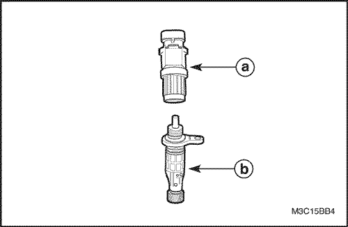
- Desmonte el sensor de velocidad del vehículo del engranaje conducido del velocímetro.
-
- a. Sensor de velocidad del vehículo.
- b. Engranaje conducido del velocímetro.
Precaución: Tenga cuidado de no sufrir daños cuando el tubo de escape esté caliente.
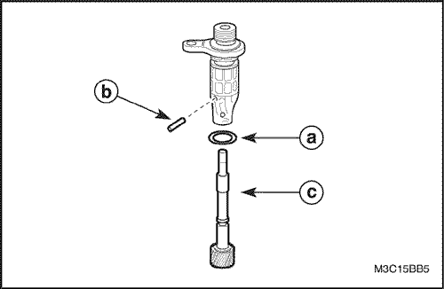
Procedimiento de inspección
- Quite la junta tórica del alojamiento del engranaje conducido del velocímetro.
- Quite el pasador del engranaje conducido y desconecte dicho engranaje.
- Compruebe si hay alguna junta tórica dañada o desgarrada.
- Compruebe si algún diente del engranaje conducido está dañado o desgastado.
-
- a. Junta tórica.
- b. Pasador del engranaje conducido.
- c. Engranaje conducido.
procedimiento de montaje
- Monte el conjunto del engranaje conducido del velocímetro en el alojamiento de la caja de cambios.
Apretar
Apriete el tornillo del conjunto del engranaje conducido del velocímetro hasta 4-7 N•m (35-62 lb-pulg.).
- Monte el sensor de velocidad del vehículo.
- Enchufe el conector del sensor de velocidad del vehículo.
Cable de mando del cambio de marchas
Procedimiento de desmontaje
- Desconecte el cable negativo de la batería.
- Desconecte el cable de mando del selector y del cambio de marchas del lado de la caja de cambios.
- Retire los pasadores del cable (1).
- Quite las arandelas (2).
- Desconecte el cable de mando del selector y del cambio de marchas (3).
- Quite los anillos en forma de E del cable (4).
- Desconecte los cables de su soporte.
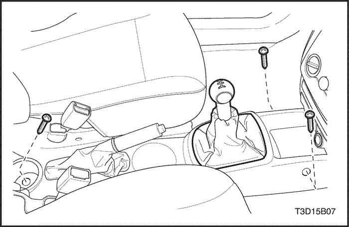
- Desmonte la consola del piso. Consulte la Sección 9G, Guarnecido interior.
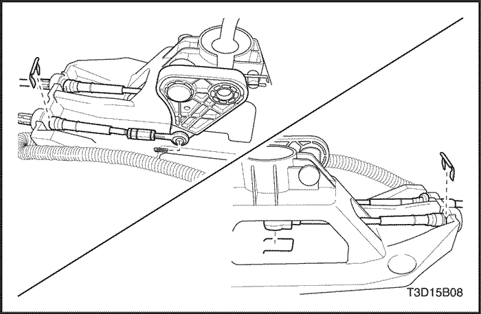
- Desmonte el clip, el pasador del cable y los anillos en forma de E y desconecte el cable de mando del selector y del cambio del lado de la palanca de cambio.
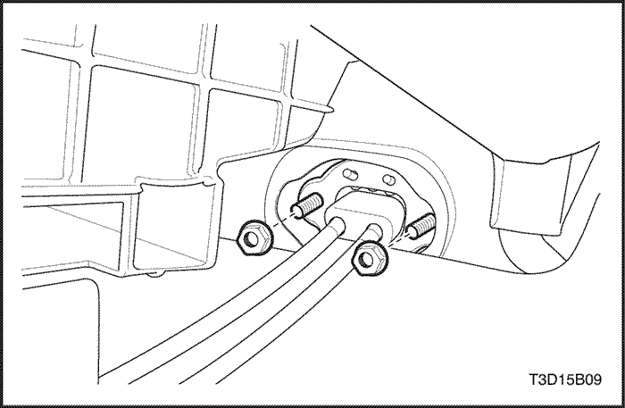
- Desmonte el cable del selector y del cambio de marchas.
- Quite las tuercas.
- Tire de los cables que hay en el habitáculo.
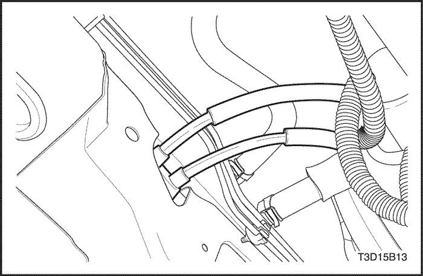
procedimiento de montaje
- Empuje ligeramente los cables hacia el compartimento motor a través del orificio en panel del salpicadero.
- Coloque los cables en la palanca selectora y del cambio.
- Monte la tuerca y el pasacables del cable del selector y del cambio.
Apretar
Apriete las tuercas hasta 4-7 N•m (35-62 lb-pulg.).
- Conecte el cable de mando del selector y del cambio del lado de la palanca de cambio.
- Coloque el pasador, los anillos en E y el clip.
- Conecte el cable del selector y del cambio.
- Conecte el cable a su soporte.
- Coloque los anillos en forma de E del cable(4).
- Conecte el cable del selector y del cambio(3).
- Coloque las arandelas(2).
- Coloque los pasadores del cable(1).
- Monte la consola del piso. Consulte la Sección 9G, Guarnecido interior.
- Conecte el cable negativo de la batería.
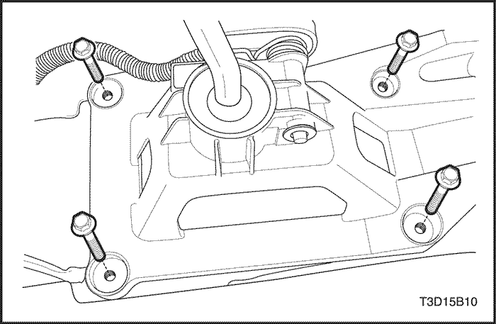
Palanca de mando del cambio de marchas
Procedimiento de desmontaje
- Desconecte el cable negativo de la batería.
- Desmonte la consola del piso. Consulte la Sección 9G, Guarnecido interior.
- Desconecte el cable del selector y del cambio de marchas. Consulte el apartado "Cable de mando del cambio de marchas" de esta sección.
- Desmonte el conjunto de la palanca de mando del cambio de marchas.
- Retire los tornillos.
- Desmonte el conjunto de la palanca de mando del cambio de marchas.
procedimiento de montaje
- Monte el conjunto de la palanca de mando del cambio de marchas.
Apretar
Apriete los tornillos hasta 5-10 N•m (44-89 lb-pulg.).
- Conecte el cable de mando del selector y del cambio. Consulte el apartado "Cable de mando del cambio de marchas" de esta sección.
- Monte la consola del piso. Consulte la Sección 9G, Guarnecido interior.
- Conecte el cable negativo de la batería.
REPARACIÓN DE LA UNIDAD
Mecanismo
Herramientas necesarias
DW09940-53111 Instalador de cojinetes y engranajes
DW09943-78210 Instalador de retenes y casquillos
DT-49082 Extractor de cojinetes de aguja
DT-49083 Instalador de cojinetes de aguja
DT-49084 Soporte del eje primario
KM519 Instalador del retén de aceite
DT-49088 Instalador de juntas de aceite
DT-49080 Instalador de cojinetes y engranajes
DW-220-020A-01 Extractor de cojinetes del diferencial.
DW-220-020A-02 Adaptador de la placa de cojinetes del diferencial.
Procedimiento de montaje
- Desmonte la caja de cambios manual. Consulte el apartado "Conjunto de la caja de cambios manual" de esta sección.
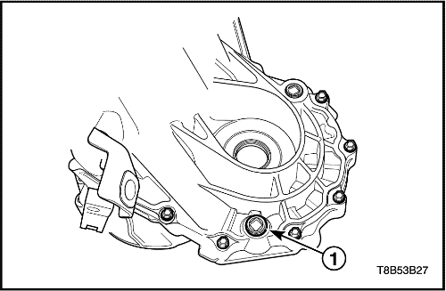
- Quite el tapón de drenaje (1) y vacíe el aceite de la caja de cambios.
- Desmonte las piezas relacionadas con el embrague. Consulte la Sección 5C2, Embrague (tipo cable).
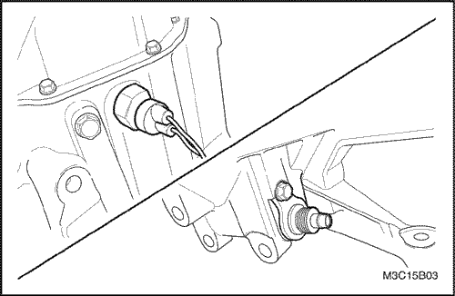
- Desconecte el interruptor luz de marcha atrás y el conjunto del engranaje conducido del velocímetro.
- Quite la tuerca y desmonte el interruptor de la luz de marcha atrás.
- Quite el tornillo y desmonte el conjunto del engranaje conducido del velocímetro.
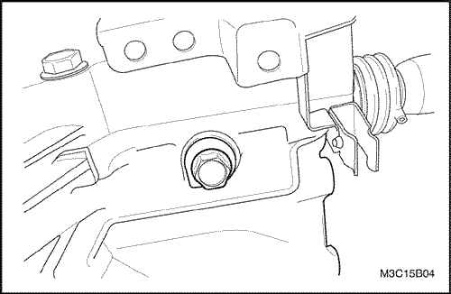
- Quite el tornillo de enclavamiento del cambio de marchas.
Importante: Extraiga totalmente el tornillo de enclavamiento del cambio de marchas. De lo contrario, no podrá desmontarse el conjunto del eje y cambio de marchas.
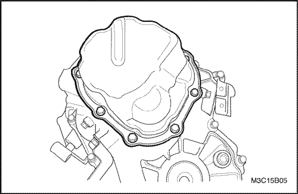
- Desmonte la tapa lateral.
- Retire los tornillos.
- Use un martillo de goma para desmontar la tapa lateral.
- Quite el sellante que hay en la tapa lateral y la carcasa de la caja de cambos.
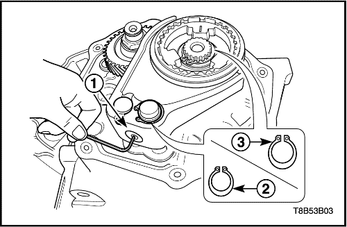
- Quite la bola de la guía de la horquilla de quinta, el anillo elástico de retención y el del engranaje del eje primario.
- Quite el tapón de la horquilla de quinta (1).
- Use un imán para quitar la bola de la guía.
- Quite el anillo elástico de retención de la horquilla de quinta (2).
- Quite el anillo elástico de retención de la quinta (3).
- Desmonte el plato del cubo de sincronizado de quinta.
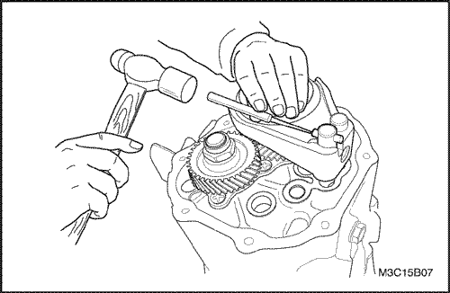
- Quite el pasador de la horquilla de quinta.
- Cambie la horquilla de selección a quinta marcha.
- Quite el pasador de la horquilla con un punzón y un martillo.
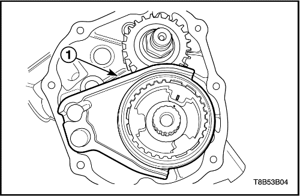
- Desmonte la horquilla de quinta del eje primario y el conjunto del cubo del sincronizador.
- Tire a la vez de la horquilla y del conjunto del cubo para desmontarlos (1).
- Retire el manguito y las unidades de chaveta del conjunto del cubo sincronizador.
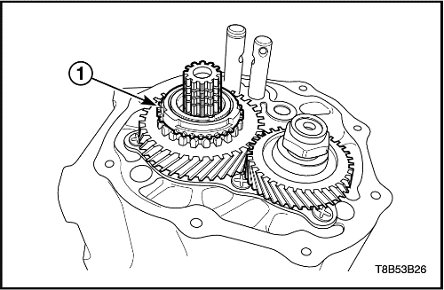
- Desmonte el engranaje de quinta del eje primario, el anillo del sincronizador y el cojinete de quinta.
- Tire a la vez para desmontarlos del engranaje de quinta y del anillo de sincronizado (1).
- Desmonte el cojinete de quinta.
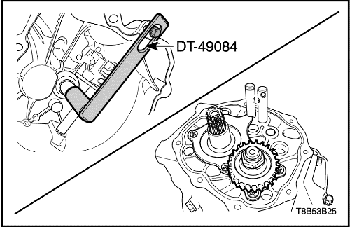
- Desmonte la tuerca del engranaje de quinta del contraeje.
- Mueva la palanca selectora hasta la posición de cuarta.
- Sujete el eje primario con el soporte del eje primario DT-49084.
- Quite la tuerca calafateada.
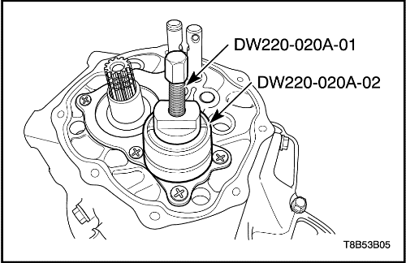
- Desmonte el engranaje de quinta del contraeje.
- Extraiga el engranaje de quinta del contraeje utilizando el extractor de cojinetes del diferencial DW220-020A-01 y el adaptador de plato de cojinetes del diferencial DW220-020A-02.
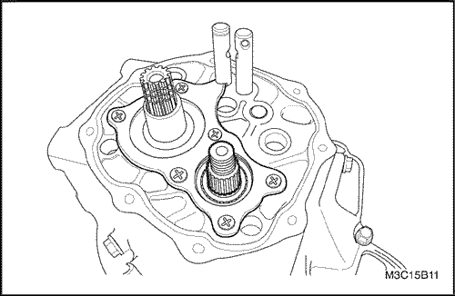
- Desmonte la placa de la carcasa izquierda y el suplemento del cojinete del contraeje.
- Quite los tornillos.
- Desmonte la placa de la carcasa izquierda.
- Retire el suplemento del cojinete del contraeje.
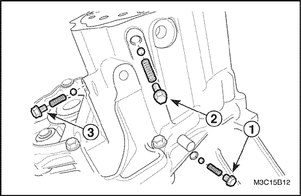
- Quite la bola y el muelle del eje de cambio.
- Quite el tornillo y extraiga la bola y el muelle del eje de cambio de marcha atrás/quinta (1).
- Quite el tornillo y extraiga la bola y el muelle del eje de cambio de tercera-cuarta (2).
- Quite el tornillo y extraiga la bola y el muelle del eje de cambio de primera-segunda (3).
Importante: El muelle del eje de cambio de marcha atrás-quinta es diferente al resto. Hágale una marca para distinguirlo a la hora del montaje.
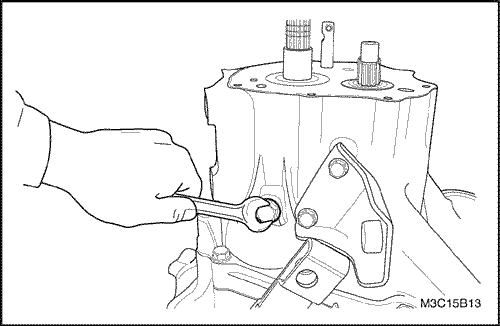
- Quite el tornillo del eje del engranaje intermedio de marcha atrás.
Importante: No se puede desmontar la carcasa (izquierda) sin haber quitado el tornillo del eje del engranaje intermedio de marcha atrás.
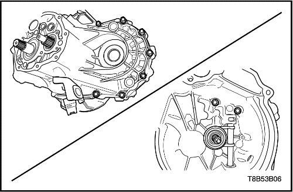
- Desmonte la carcasa de la caja de cambios (izquierda).
- Quite los tornillos de la carcasa del lado izquierdo.
- Quite los tornillos de la carcasa del lado derecho.
- Desmonte la carcasa del lado izquierdo golpeándola suavemente con un martillo de goma.
- Retire el sellante que hay en la carcasa.
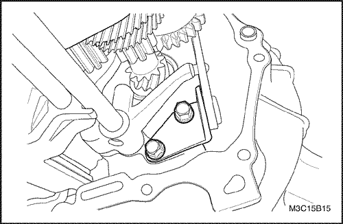
- Desmonte la palanca de cambio de marcha atrás.
- Retire los tornillos.
- Desmonte la palanca de cambio de marcha atrás.
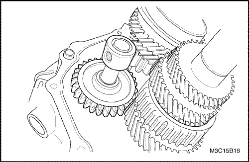
- Desmonte el conjunto del eje del engranaje intermedio de marcha atrás.
- Empuje el engranaje intermedio de marcha atrás hacia la carcasa interior.
- Tire del eje y desmonte el engranaje intermedio de marcha atrás y el eje.
- Desmonte del eje el engranaje intermedio de marcha atrás.
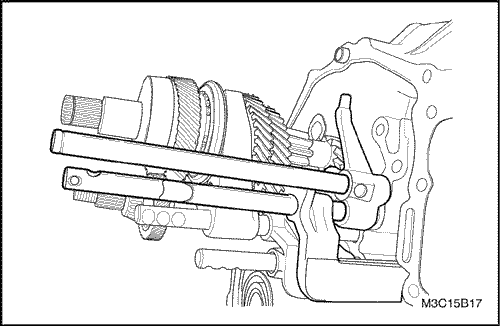
- Desmonte el eje de selección de marcha atrás-quinta.
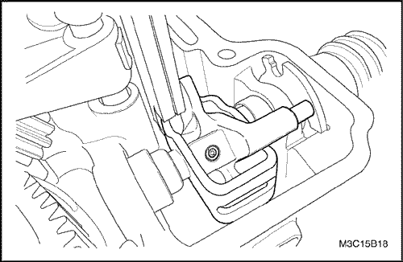
- Quite los pasadores interior y exterior de la palanca selectora y de cambio.
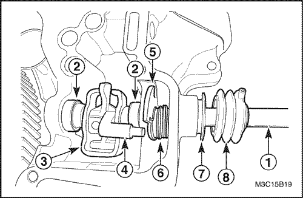
- Desmonte el conjunto de la palanca selectora y del cambio.
- Desmonte el eje del selector y cambio (1).
- Desmonte los conjuntos de muelles del selector (2).
- Desmonte el plato de enclavamiento del cambio de marchas (3).
- Desmonte la palanca de cambio (4).
- Desmonte la leva de cambio de marcha atrás y quinta (5).
- Desmonte el muelle de retorno (6).
- Desmonte el fuelle del selector y del cambio de marchas (8).
- Desmonte el retén de aceite del eje del selector y del cambio de marchas (7).
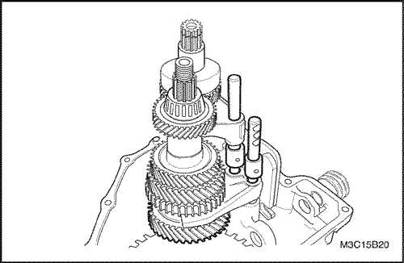
- Desmonte el mecanismo.
- Desmonte el mecanismo y el conjunto del eje del cambio a la vez.
Aviso: Tenga cuidado para no dañar los dientes del piñón del contraeje ni la corona del diferencial.
- Desmonte del mecanismo el conjunto del eje del cambio de velocidad baja y alta.
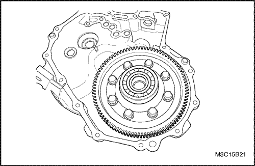
- Desmonte el conjunto del diferencial.
- Inserte un palo de madera en el lado inferior del diferencial.
- Desmonte el conjunto del diferencial moviéndolo a derecha e izquierda.
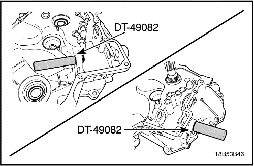
- Desmonte los cojinetes de agujas del eje del selector y del cambio con el extractor de cojinetes de agujas DT-49082.
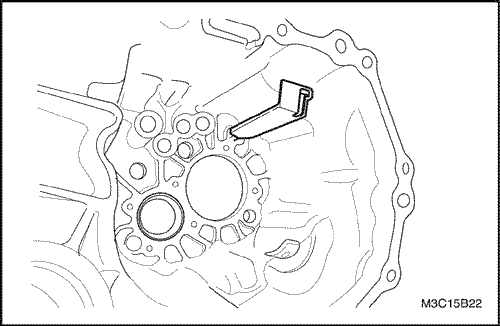
- Desmonte las piezas relacionadas de la carcasa de la caja de cambios (lado izquierdo).
- Quite el canalón de aceite.
- Use un martillo y un cincel de cobre para quitar el retén de aceite del lado izquierdo del diferencial.
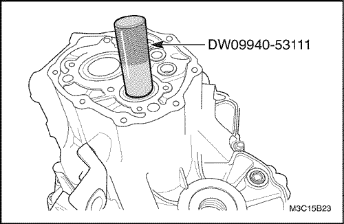
- Desmonte la pista exterior del cojinete del contraeje con la ayuda de un martillo y del instalador de cojinetes y engranajes DW09940-53111.
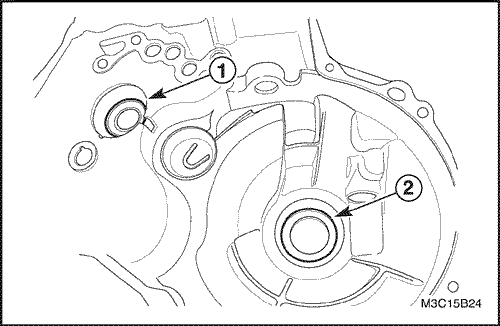
- Desmonte las piezas relacionadas de la carcasa de la caja de cambios (lado derecho).
- Use un destornillador para desmontar el retén de aceite del lado de entrada (1).
- Use un martillo y un cincel de cobre para quitar el retén de aceite del lado derecho del diferencial (2).
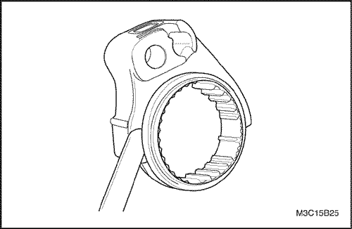
Inspección del manguito del sincronizador y de la horquilla de selección
- Mida la holgura entre el manguito del sincronizador y la horquilla de selección, y si se sobrepasa el límite, sustituya la horquilla.
-
- Unidad: mm (pulg.)
|
Holgura entre el manguito y la horquilla de selección
.
.
|
Estándar
|
Límite
|
|
0,2~0,6
(0,008~0,024)
|
1,0
(0,039)
|
Procedimiento de montaje (armado, ensamblaje)
- Monte las piezas relacionadas de la carcasa de la caja de cambios (lado derecho).
- Monte el retén de aceite del eje primario con la ayuda del instalador de retenes y casquillos DW09943-78210.
- Monte el retén de aceite del lado derecho del diferencial con la ayuda del instalador de retenes de aceite DT-49088.
Importante: Utilice sólo retenes nuevos.
Importante: Aplique aceite para engranajes al montar las piezas internas de la caja de cambios.
- Monte las piezas relacionadas de la carcasa de la caja de cambios (lado izquierdo).
- Monte el canalón de aceite.
- Monte el retén de aceite del lado izquierdo del diferencial con la ayuda del instalador de retenes de aceite KM519.
- Monte el conjunto del diferencial en el lado derecho de la carcasa de la caja de cambios.
- Monte en el mecanismo el conjunto del eje del cambio de velocidad alta y baja.
- Monte el mecanismo.
- Empuje el mecanismo haciéndolo coincidir con el orificio del eje primario y del contraeje.
Aviso: Tenga cuidado para no dañar los dientes del piñón del contraeje ni la corona del diferencial.
- Monte el eje de selección de marcha atrás-quinta.
- Ponga la bola y el muelle del eje de cambio de marcha atrás-quinta.
Apretar
Apriete el tornillo hasta 10-16 N•m (7-12 lb-pie).
Importante: Ponga el muelle, que fue marcado cuando se desmontó, del eje de cambio de marcha atrás-quinta.
- Monte el conjunto del eje del engranaje intermedio de marcha atrás y la palanca de cambio de marcha atrás.
- Monte el conjunto del eje del engranaje intermedio de marcha atrás (1).
Importante: Alinee la marca del orificio del tornillo del eje del engranaje intermedio de marcha atrás con la parte que sobresale de la carcasa de la caja de cambios (lado derecho).
- Monte la palanca de cambios del engranaje de la marcha atrás.
Apretar
Apriete los tornillos hasta 18-28 N•m (13-21 lb-pie).
- Monte los cojinetes de agujas del selector y del cambio con la ayuda del instalador de cojinetes de agujas DT-49083 y el extractor cojinetes de agujas DT-49082.
- Monte el conjunto del eje del selector y del cambio.
- Monte el retén de aceite del eje del selector y del cambio de marchas.
- Monte el fuelle del selector y del cambio de marchas.
- Monte los conjuntos de muelles del selector.
- Monte el plato de enclavamiento del cambio de marchas.
- Monte la palanca de cambios.
- Monte la leva de cambio de marcha atrás y de quinta.
- Monte el muelle de retorno.
- Monte el eje del selector y del cambio de marchas.
- Coloque los pasadores interior y exterior de la palanca selectora y de cambio.
Importante: Al colocar los pasadores interior y exterior, las hendiduras de los dos pasadores deben quedar simétricas.
- Monte la carcasa del lado izquierdo de la caja de cambios.
- Aplique a la carcasa de la caja de cambios un sellante recomendado.
|
Sellante de la carcasa de la caja de cambios
|
THREE BOND 1215
|
- Monte las carcasas del lado izquierdo y del lado derecho de la caja de cambios.
Apretar
Apriete los tornillos hasta 15-22 N•m (11-16 lb-pie).
- Ponga la bola y el muelle del eje de cambio de primera-segunda.
Apretar
Apriete el tornillo hasta 10-16 N•m (7-12 lb-pie) (a).
- Ponga la bola y el muelle del eje de cambio de tercera-cuarta.
Apretar
Apriete el tornillo hasta 10-16 N•m (7-12 lb-pie) (b).
- Coloque el tornillo del eje del engranaje intermedio de marcha atrás.
Apretar
Apriete el tornillo hasta 18-28 N•m (13-21 lb-pie) (c).
- Monte la pista exterior del cojinete del contraeje.
- Monte la pista exterior del cojinete del contraeje con la ayuda del instalador de casquillos y engranajes DW09940-53111.
-
- a. Pista exterior del cojinete.
Importante: Haga girar el contraeje para comprobar si el cojinete y la pista exterior están bien montados.
- Coloque el suplemento del cojinete del contraeje.
- Mida la holgura entre la superficie de la carcasa de la caja de cambios y la pista exterior del cojinete con la ayuda de una regla recta y una galga.
- Seleccione el suplemento de modo que la holgura sea la estándar.
-
- Unidad: mm (pulg.)
|
Valor medido (A)
|
Espesor del suplemento
|
|
0,33-0,37 (0,0130-0,0146)
|
0,55 (0,0217)
|
|
0,38-0,42 (0,0147-0,0165)
|
0,60 (0,0236)
|
|
0,43-0,47 (0,0169-0,0185)
|
0,65 (0,0256)
|
|
0,48-0,52 (0,0189-0,0205)
|
0,70 (0,0276)
|
|
0,53-0,57 (0,0209-0,0224)
|
0,75 (0,0295)
|
|
0,58-0,62 (0,0228-0,0244)
|
0,80 (0,0315)
|
|
0,63-0,67 (0,0248-0,0264)
|
0,85 (0,0335)
|
|
0,68-0,72 (0,0268-0,0283)
|
0,90 (0,0354)
|
|
0,73-0,77 (0,0287-0,0303)
|
0,95 (0,0374)
|
|
0,78-0,82 (0,0307-0,0323)
|
1,00 (0,0394)
|
|
0,83-0,87 (0,0327-0,0343)
|
1,05 (0,0413)
|
|
0,88-0,92 (0,0346-0,0362)
|
1,10 (0,0433)
|
|
0,93-0,97 (0,0366-0,0382)
|
1,15 (0,0453)
|
|
0,98-1,02 (0,0386-0,0402)
|
1,20 (0,0472)
|
|
1,03-1,07 (0,0406-0,0421)
|
1,25 (0,0492)
|
-
- a. Regla recta
- b. Pista exterior del cojinete
- c. Superficie de la carcasa
- Monte la placa de la carcasa izquierda y el engranaje de quinta del contraeje.
- Monte la placa de la carcasa izquierda.
Apretar
Apriete los tornillos hasta 8-9 N•m (71-80 lb-pulg.).
Importante: Utilice sólo tornillos nuevos.
- Monte el engranaje de quinta del contraeje utilizando el instalador de engranajes y cojinetes DT-49080.
Importante: Coloque el lado mecanizado del tetón hacia la tapa lateral.
- Monte el cojinete del engranaje de quinta del eje primario, el anillo del sincronizado / de quinta.
- Introduzca el cojinete en el eje primario.
- Monte el anillo del sincronizador (1) y el engranaje de quinta, haciendo coincidir el ojal del anillo del sincronizador (3) y la marca perforada del eje primario (2).
- Monte el conjunto del cubo del sincronizador de quinta.
- Coloque el lado más largo del tetón del cubo hacia la parte interior.
- Coloque las estrías biseladas del manguito hacia el lado interior y monte el cubo en el manguito.
- Monte las unidades de chaveta en la ranura de la chaveta del manguito y del cubo.
Importante: Asegúrese de que las unidades de chaveta están bien asentadas en la ranura de chaveta del manguito y del cubo.
- Unidad de chaveta
- Cubo, buje
- Manguito
- Monte la horquilla de quinta en el conjunto del cubo del sincronizador.
- Monte la horquilla de quinta y el conjunto del cubo del sincronizador en el eje primario.
Importante: Coloque el lado del refuerzo más largo del cubo hacia el lado interior y haga coincidir la marca del cubo con la marca perforada del eje primario.
- Ponga el pasador de la horquilla de quinta.
- Empuje la horquilla de selección hacia el engranaje de quinta.
- Ponga el pasador de la horquilla con un punzón botador y un martillo.
Importante: Utilice sólo pasadores de horquilla nuevos.
- Monte el anillo elástico de retención del engranaje de quinta del eje primario, el anillo elástico de la horquilla de quinta y la bola de la guía.
- Monte el plato del cubo de sincronizado de quinta.
- Monte el anillo elástico de retención del engranaje de quinta (3).
- Monte el anillo elástico de la horquilla (2).
Importante: Utilice sólo anillos elásticos de retención nuevos.
- Apriete el tapón de la horquilla después de introducir la bola de la guía en el orificio de dicha horquilla (1).
- Ponga la tuerca del engranaje de quinta del contraeje.
- Mueva la palanca selectora hasta la posición de quinta.
- Sujete el eje primario con el soporte del eje primario DT-49084.
Apretar
Apriete la tuerca del engranaje de quinta hasta 60-80 N•m (44-59 lb-pie).
- Calafatee la tuerca con un cincel y un martillo.
- Monte la tapa lateral.
- Aplique a la tapa lateral un sellante recomendado.
|
Sellante de la tapa lateral
|
THREE BOND 1215
|
Apretar
Apriete los tornillos de la tapa lateral hasta 8-12 N•m (71-106 lb-pulg.).
- Coloque el tornillo de enclavamiento del cambio de marchas.
Apretar
Apriete el tornillo de enclavamiento del cambio de marchas hasta 18-28 N•m (13-21 lb-pie).
- Monte el interruptor de la luz de marcha atrás y el conjunto del engranaje conducido del velocímetro.
- Monte el interruptor de la luz de marcha atrás.
Apretar
Apriete la tuerca hasta 15-18 N•m (11-13 lb-pie).
- Monte el conjunto del engranaje conducido del velocímetro.
Apretar
Apriete el tornillo hasta 4-7 N•m (35-62 lb-pulg.).
- Monte las piezas relacionadas con el embrague. Consulte la Sección 5C2, Embrague (tipo cable).
- Coloque un nuevo tapón de drenaje (1).
Apretar
Apriete el tapón de drenaje hasta 20-30 N•m (15-22 lb-pie).
- Monte el conjunto de la caja de cambios. Consulte el apartado "Conjunto de la caja de cambios manual" de esta sección.
Eje primario
Herramientas necesarias
DW09921-57810 Extractor de cojinetes y engranajes
DT-49080 Instalador de cojinetes y engranajes
DW09940-53111 Instalador de cojinetes y engranajes
Procedimiento de desmontaje
- Desmonte el mecanismo. Consulte el apartado "Mecanismo" de esta sección.
- Desmonte el cojinete lateral derecho del eje primario.
- Coloque el cojinete en el extractor de cojinetes y engranajes DW09921-57810.
- Presione para extraer el cojinete (1).
- Desmonte el espaciador de quinta del eje primario, el cojinete lateral izquierdo y el engranaje de cuarta.
- Coloque el engranaje de cuarta en el extractor de cojinetes y engranajes DW09921-57810.
- Desmonte las siguientes piezas:
-
- a. Espaciador de quinta.
- b. Cojinete lateral izquierdo.
- c. Cuarta
- Desmonte el cojinete de cuarta.
- Desmonte el anillo del sincronizador de cuarta.
- Quite el circlip del sincronizador de tercera.
- Desmonte el conjunto de cubo del sincronizador de tercera-cuarta y el anillo del sincronizador de tercera.
- Coloque el engranaje de tercera en el extractor de cojinetes y engranajes DW09921-57810.
- Desmonte las siguientes piezas:
-
- a. Conjunto del cubo del sincronizador de tercera-cuarta.
- b. Anillo del sincronizador y del engranaje de tercera.
- Desmonte el conjunto del cubo del sincronizador de tercera-cuarta.
- Empuje el cubo (1) desde el conjunto del cubo del sincronizador.
- Desmonte el manguito del sincronizado (2) y las unidades de chaveta (3).
- Desmonte el cojinete de tercera del eje primario (1).
Inspección del conjunto del sincronizador
- Compruebe si hay desgaste en la zona de los conos.
- Tras emparejar el anillo del sincronizador con el engranaje, realice la medición como se muestra en el dibujo. Sustitúyalo si está por debajo del límite.
-
- Unidad: mm (pulg.)
|
Holgura entre el engranaje y el anillo
|
Estándar
|
Límite
|
|
1,0 (0,039)
|
0,5 (0,020)
|
Importante: Sustitúaylo por un nuevo anillo de sincronizador empapado al menos cinco minutos en aceite de la caja de cambios (SAE 75W85W).
- Inspección del estado de contacto de los conos.
- Cuando el mecanismo del sincronizador funciona de forma anormal, se considera que la conexión entre la superficie interior del anillo y la zona de conos del engranaje es parcialmente deficiente, aunque la holgura entre el engranaje y el anillo sea correcta. Por consiguiente, deberá inspeccionarse la superficie interior del anillo y la zona de conos. La zona de conos puede estar desgasta de forma ondulada. Sustituya el anillo del sincronizador y el engranaje si fuera necesario.
Importante: Sustitúaylo por un nuevo anillo de sincronizador empapado al menos cinco minutos en aceite de la caja de cambios (SAE 75W85W).
- Inspección en busca de desgaste del anillo del sincronizador.
- Compruebe si los dientes del anillo del sincronizador están dañados o desgastados. Sustitúyalo si fuera necesario.
Importante: Sustitúaylo por un nuevo anillo de sincronizador empapado al menos cinco minutos en aceite de la caja de cambios (SAE 75W85W).
- Comprobación de la unidad de chaveta del sincronizador.
- Compruebe si el muelle está debilitado, dañado o roto.
Procedimiento de montaje (armado, ensamblaje)
- Monte el cojinete de tercera y el anillo del sincronizador / engranaje de tercera.
-
- a. Anillo del sincronizador / engranaje de tercera.
- b. Cojinete de tercera.
Importante: Aplique aceite de engranajes a las piezas internas, engranajes, cojinetes, retenes, etc.
- Monte el conjunto del cubo del sincronizador de tercera-cuarta.
- Monte el cubo en el manguito.
- Monte las unidades de chaveta en la ranura de la chaveta del manguito y del cubo.
Importante: Asegúrese de que las unidades de chaveta están bien asentadas en la ranura de chaveta del manguito y del cubo.
-
- a. Manguito
- b. Cubo, buje
- c. Unidad de chaveta
- Monte el conjunto del cubo del sincronizador de tercera-cuarta.
- Introduzca el cubo en el eje primario (1).
Importante: Coloque la brida más larga del cubo hacia el engranaje de tercera y haga coincidir la ranura de la chaveta del cubo con el ojal del anillo del sincronizador.
- Monte el conjunto del cubo con la ayuda de un martillo y del instalador de cojinetes y engranajes DW09940-53111.
Aviso: Al montar el conjunto del cubo, cojinete y engranaje, hágalo poco a poco y use el instalador de cojinetes y engranajes DW09940-53111 y un martillo. Si presiona demasiado los dientes del engranaje, podría dañarlos.
- Coloque el circlip del sincronizador de tercera-cuarta.
- Monte el anillo del sincronizador de cuarta.
Importante: Haga coincidir el ojal del anillo del sincronizador con la ranura de la chaveta del cubo.
- Monte el cojinete de cuarta del eje primario y el engranaje de cuarta.
-
- a. Cuarta.
- b. Cojinete de cuarta.
- Monte el cojinete lateral izquierdo del eje primario y el espaciador de quinta.
- Utilice un martillo y el instalador de cojinetes y engranajes DT-49080 para montar las siguientes piezas:
-
- a. Espaciador de quinta.
- b. Cojinete lateral izquierdo del eje primario.
- Monte el cojinete lateral derecho del eje primario.
- Monte el cojinete en el eje primario con la ayuda de un martillo y del instalador de cojinetes y engranajes DT-49080 (1).
- Monte el mecanismo. Consulte el apartado "Mecanismo" de esta sección.
Contraeje
Herramientas necesarias
DW09921-57810 Extractor de cojinetes y engranajes
DT-49079 Instalador de cojinetes y engranajes
DT-49080 Instalador de cojinetes y engranajes
DT-49081 Instalador de cojinetes y engranajes
procedimiento de desmontaje (desarmado, desensamble, desensamblaje)
- Desmonte el mecanismo. Consulte el apartado "Mecanismo" de esta sección.
- Desmonte el cojinete lateral derecho del contraeje.
- Desmonte el engranaje de cuarta y el cojinete lateral izquierdo del contraeje.
- Coloque el engranaje de cuarta en el extractor de cojinetes y engranajes DW09921-57810.
- Desmonte las siguientes piezas presionando:
-
- a. Cojinete lateral izquierdo del contraeje.
- b. Cuarta.
- Desmonte el espaciador de tercera-cuarta del contraeje.
- Desmonte los engranajes de tercera y segunda del contraeje.
- Coloque el engranaje de segunda en el extractor de cojinetes y engranajes DW09921-57810.
- Desmonte las siguientes piezas presionando:
-
- a. Tercera.
- b. Segunda.
- Desmonte el cojinete de segunda del contraeje.
- Desmonte el anillo del sincronizador de segunda.
- Desmonte el circlip del sincronizador de primera-segunda.
- Desmonte el conjunto del cubo del sincronizador de primera-segunda del contraeje, el anillo del sincronizador de primera / engranaje de primera.
- Coloque el engranaje de primera en el extractor de cojinetes y engranajes DW09921-57810.
- Desmonte las siguientes piezas presionando:
-
- a. Conjunto del cubo del sincronizador.
- b. Anillo del sincronizador de primera / engranaje de primera.
- Desmonte del engranaje de primera el anillo del sincronizador de primera.
- Desmonte el conjunto del cubo del sincronizador de primera-segunda.
- Empuje el cubo (1) desde el conjunto del cubo del sincronizador.
- Desmonte el manguito del sincronizado (2) y las unidades de chaveta (3).
- Extraiga el cojinete del engranaje de primera del contraeje y el espaciador de primera.
Inspección del manguito y del cubo del sincronizador
- Tras montar el cubo y el manguito, compruebe si el manguito no funciona correctamente.
- Compruebe el desgaste del manguito y el cubo.
- Sustituya el manguito o el cubo del sincronizado si fuera necesario.
Procedimiento de montaje (armado, ensamblaje)
- Monte el engranaje de primera del contraeje relacionado.
- Monte el espaciador de primera (1).
- Monte el cojinete de primera (2).
- Monte el cojinete de segunda (3).
- Monte el anillo del sincronizador de primera (4).
Importante: Aplique aceite de engranajes a las piezas internas, engranajes, cojinetes, retenes, etc.
- Monte el conjunto del cubo del sincronizador de primera-segunda.
- Monte el cubo en el manguito
- Monte las unidades de chaveta en la ranura de la chaveta del manguito y del cubo.
Importante: Asegúrese de que las unidades de chaveta están bien asentadas en la ranura de chaveta del manguito y del cubo.
-
- a. Manguito.
- b. Cubo.
- c. Unidad de chaveta.
- Monte el conjunto del cubo del sincronizador de primera-segunda.
- Inserte el conjunto del cubo en el contraeje utilizando el instalador de cojinetes y engranajes DT-49081 y un martillo (1).
Importante: Haga coincidir la ranura de la chaveta del cubo con el ojal del anillo del sincronizador de primera.
- Monte el circlip del sincronizador de primera-segunda.
- Monte el anillo del sincronizador de segunda.
Importante: Haga coincidir el ojal del anillo del sincronizador de segunda con la ranura de la chaveta del cubo.
- Monte el engranaje de segunda del contraeje relacionado.
- Monte el cojinete de segunda (1).
- Monte el engranaje de segunda (2).
- Monte el engranaje de tercera del contraeje y el espaciador de tercera-cuarta.
- Monte el engranaje de tercera del contraeje y el espaciador de tercera-cuarta en el contraeje.
- Utilice un martillo y el instalador de cojinetes y engranajes DT-49079 para montar las siguientes piezas:
-
- a. Espaciador de tercera-cuarta.
- b. Tercera.
- Monte el engranaje de cuarta del contraeje.
- Monte el engranaje de cuarta en el contraeje con la ayuda de un martillo y del instalador de cojinetes y engranaje DT-49080(1).
- Monte el cojinete lateral izquierdo del contraeje.
- Monte el cojinete del lado izquierdo en el contraeje con la ayuda de un martillo y del instalador de cojinetes y engranajes DT-49080 (1).
- Monte el cojinete lateral derecho del contraeje.
- Monte el mecanismo. Consulte el apartado "Mecanismo" de esta sección.
Horquilla de selección
procedimiento de desmontaje (desarmado, desensamble, desensamblaje)
- Desmonte el mecanismo. Consulte el apartado "Mecanismo" de esta sección.
- Desmonte del mecanismo el conjunto de cada eje de cambio.
- Desmonte el conjunto del eje de cambio de primera-segunda.
- Fije el conjunto del eje de cambio con un protector al tornillo de banco.
- Quite el pasador de la brida de primera-segunda con un punzón botador y un martillo (1).
- Desmonte la brida de selección de primera-segunda (2).
- Quite el pasador de la horquilla de primera-segunda con un punzón botador y un martillo (3).
- Desmonte la horquilla de selección de primera-segunda (4).
Importante: Marque antes de desmontar el lugar y la dirección de la brida y la horquilla de selección para luego montarlas más fácilmente.
- Desmonte el conjunto del eje de cambio de tercera-cuarta.
- Fije el conjunto del eje de cambio de tercera-cuarta con un protector al tornillo de banco.
- Quite el pasador de la horquilla de tercera-cuarta con un punzón botador y un martillo (1).
- Desmonte la horquilla de tercera-cuarta (2).
- Quite el pasador de la brida de tercera-cuarta con un punzón botador y un martillo (3).
- Desmonte la brida de selección de tercera-cuarta (4).
- Desmonte el eje de cambio de marcha atrás-quinta.
- Empuje y desmonte el eje de cambio que no está montado con brida (1).
- Desmonte las siguientes piezas del brazo de cambio de marcha atrás:
-
- a. Bola del engranaje de marcha atrás-quinta.
- b. Muelle y bola de la guía de marcha atrás.
- Fije el conjunto del eje de cambio con un protector al tornillo de banco.
- Quite el pasador del brazo de cambio de marcha atrás con un punzón botador y un martillo (2).
- Desmonte el brazo de cambio de marcha atrás (3).
- Quite el pasador de la brida de selección de quinta marcha con un punzón botador y un martillo (4).
- Desmonte la brida de selección de quinta marcha (5).
Procedimiento de inspección - eje de cambio
- Compruebe si el eje de cambio está doblado, deformado o dañado.
- Sustituya el eje de cambio si fuera necesario.
Procedimiento de inspección - horquilla de selección
- Mida el espesor del extremo de la horquilla de selección y sustitúyala si está por debajo del límite.
-
- Unidad: mm (pulg.)
|
Espesor del extremo de la horquilla de
selección (mm)
|
Estándar
|
Límite
|
|
Horquilla de selección de velocidad baja
|
8,7 (0,343)
|
8,56 (0,337)
|
|
Horquilla de selección de velocidad alta
|
7,8 (0,307)
|
7,66 (0,302)
|
|
Horquilla de selección de quinta
|
7,8 (0,307)
|
7,66 (0,302)
|
Procedimiento de montaje (armado, ensamblaje)
- Para el montaje, repita en orden inverso el procedimiento de desmontaje.
Importante: Utilice sólo pasadores de horquilla y de brida nuevos.
Diferencial
Herramientas necesarias
Instalador de retenes y casquillos 09913-76010
DW220-020A-01 Extractor de cojinetes del diferencial
DW220-020A-02 Adaptador de la placa de cojinetes del diferencial.
DW220-020A-03 Adaptador de la placa de cojinetes del diferencial.
procedimiento de desmontaje (desarmado, desensamble, desensamblaje)
- Desmonte el conjunto del diferencial. Consulte el apartado "Mecanismo" de esta sección.
- Desmonte la corona del diferencial.
- Fije el conjunto del diferencial con un protector al tornillo de banco.
- Quite los tornillos (1).
- Desmonte la corona (2).
- Fije el conjunto del diferencial con un protector al tornillo de banco.
- Quite los tornillos (1).
- Desmonte la corona (2).
- Quite el pasador del piñón.
- Quite el pasador con un punzón botador y un martillo (1).
- Desmonte el eje del piñón.
- Desmonte el eje de la carcasa (1).
- Desmonte los piñones y los engranajes laterales.
- Desmonte los piñones y las arandelas (1).
Importante: Desmonte el piñón y la arandela haciendo girar el engranaje lateral.
- Quite los engranajes laterales (2).
- Quite los suplementos de ajuste de los engranajes laterales (3).
- Desmonte el cojinete lateral derecho del diferencial y el engranaje de mando del velocímetro.
- Desmonte el cojinete lateral derecho con la ayuda del extractor de cojinetes del diferencial DW220-020A-01 y el adaptador de placas de apoyo del diferencial DW220-020A-02.
- Desmonte el engranaje de mando del velocímetro (1).
- Desmonte el cojinete lateral izquierdo del diferencial.
- Desmonte el cojinete lateral izquierdo con la ayuda del extractor de cojinetes del diferencial DW220-020A-01 y el adaptador de placas de apoyo del diferencial DW220-020A-03.
Inspección del juego de los engranajes laterales
- Mida el juego de dirección axial del engranaje lateral y, si sobrepasa el límite, sustituya una arandela.
-
- Unidad: mm (pulg.)
|
Juego libre de empuje del
engranaje lateral del diferencial
|
0,03-0,4
(0,001-0,016)
|
-
- Unidad: mm (pulg.)
|
Empuje
Ajuste
suplemento, cuña, arandela de ajuste
|
0,90(0,0354)-0,95(0,0374)
|
|
1,00(0,0394)-1,05(0,0413)
|
|
1,10(0,0433)-1,15(0,0453)
|
|
1,20(0,0472)
|
- Compruebe si hay algún suplemento de ajuste de empuje desgastado o rayado y sustitúyalo si fuera necesario.
-
- a. Engranaje lateral.
- b. Piñón de ataque.
Procedimiento de montaje (armado, ensamblaje)
- Monte el cojinete lateral izquierdo del diferencial.
- Introduzca el cojinete lateral izquierdo (1).
- Monte el cojinete lateral izquierdo con la ayuda de un martillo y del instalador de retenes y casquillos 09913-76010.
Importante: Aplique aceite de engranajes a las piezas internas, engranajes, cojinetes, suplementos, etc.
- Monte el engranaje de mando del velocímetro y el cojinete lateral derecho del diferencial.
- Introduzca el engranaje de mando del velocímetro (1).
- Introduzca el cojinete lateral derecho del diferencial (2).
- Monte el cojinete lateral derecho con la ayuda de un martillo y del instalador de retenes y casquillos 09913-76010.
- Monte los engranajes laterales y los piñones.
- Introduzca los suplementos de ajuste de empuje en los engranajes laterales.
- Monte los engranajes laterales (1).
- Monte los piñones y las arandelas (2).
Importante: Monte los piñones y las arandelas al mismo tiempo.
- Monte el eje del piñón y el pasador.
- Introduzca el eje en el hueco del pasador del piñón haciéndolo girar (1).
- Empuje el pasador con un punzón botador y un martillo (2).
Importante: Utilice sólo pasadores nuevos.
- Monte la corona del diferencial.
- Fije el conjunto del diferencial a un tornillo de banco.
- Monte la corona con sus tornillos (1).
Apretar
Apriete los tornillos hasta 80-100 N•m (59-74 lb-pie).
- Monte el conjunto del diferencial. Consulte el apartado "Mecanismo" de esta sección.
 |
|
 |
|
| © Copyright Chevrolet Europe. Reservados todos los derechos |